Odoo 18 · Administration · Users & Access Rights
Provision users from layered, inheritable templates of languages, time zones, companies and access groups. Group users with tags, decide per setting whether a template merges or overrides, preview every change before it happens and keep a complete audit trail.
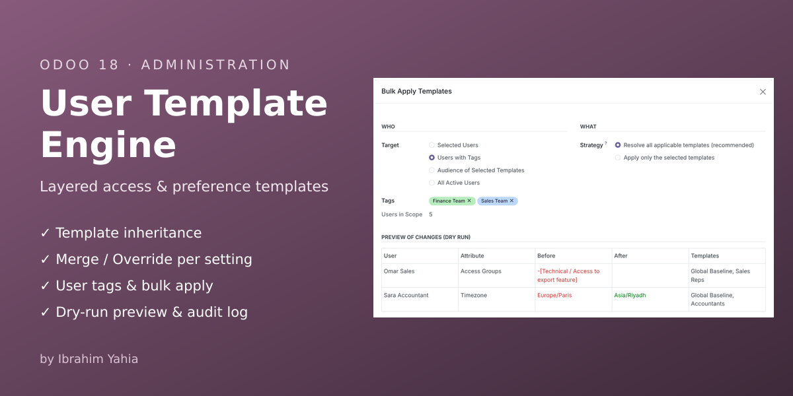
Standard Odoo gives every new internal user the access rights of a single "Default User Template" and nothing more. Everything after that is edited by hand, one user at a time.
Finance Team, Sales Team, Management, External Contractors…
A global baseline plus functional templates that inherit from it.
The engine resolves the full stack per user and shows a dry-run diff.
Automatically on create / tag change, or in bulk. Every change is logged.
All screenshots are taken from Odoo 18 with the module's demo data.
Create as many templates as you need: a Global Baseline for all internal users and functional templates such as Accountants, Sales Reps, Finance Managers or Restricted Contractors. Drag the handle to change the sequence: templates are applied from the lowest to the highest sequence, so a later template wins conflicts. Archived templates are ignored.
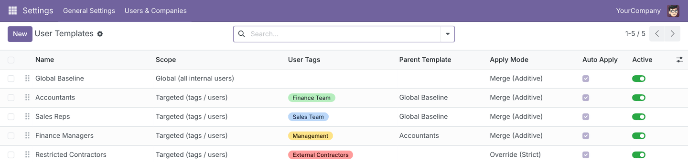
Each template can pack default system preferences. Every setting has its own policy (Not Managed, Set on this Template, Inherit from Parent) and its own mode. The Global Baseline below sets English and the Asia/Riyadh time zone in Merge mode, so it only fills users who have no value yet and never overwrites a personal choice.
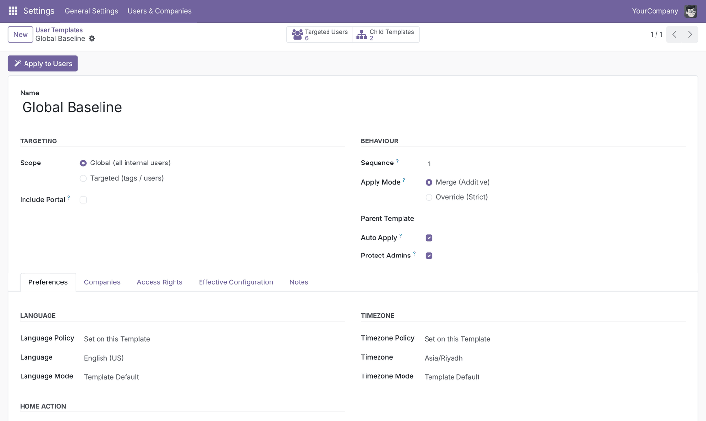
Accountants is a child of the Global Baseline. Its time zone is Inherit from Parent but in Override mode: the value comes from the parent, the behaviour comes from the child. Result in the demo: Sara (who had Europe/Paris) is moved to Asia/Riyadh, while users outside Finance keep their own time zone.
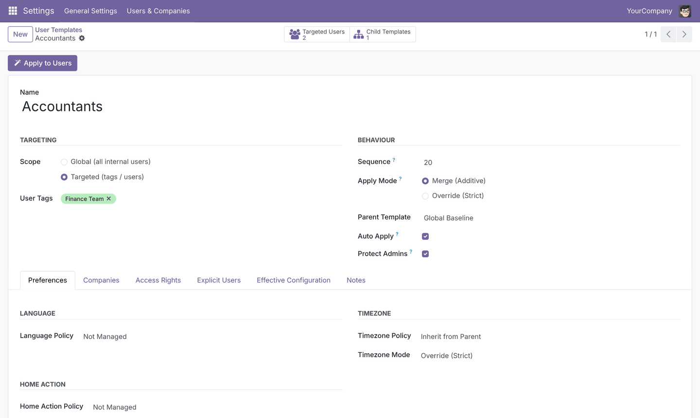
Templates grant access groups and can also revoke groups explicitly. Sales Reps grants Contact Creation and revokes the export right that the Global Baseline grants to everyone, showing conflict resolution between two templates. Internal / Portal / Public user-type groups cannot be selected, so a template can never change a user's type.
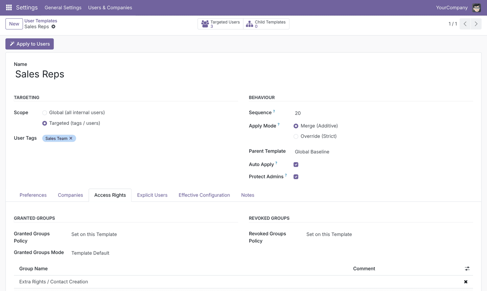
Restricted Contractors runs last (sequence 90) in Override mode with an empty group list: it replaces everything granted by earlier templates. A contractor who is also tagged Sales Team ends up with the Internal User type only, plus a UTC time zone.
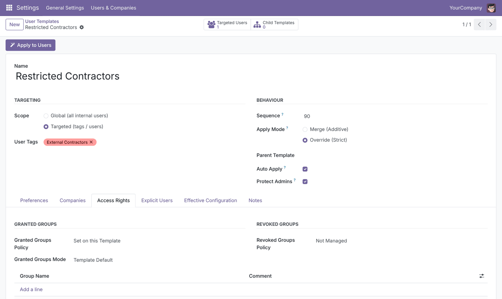
Templates manage allowed companies (merged or replaced) and the default / active company. The engine keeps them consistent automatically: an enforced default company is always added to the allowed companies; otherwise the first allowed company becomes the default.
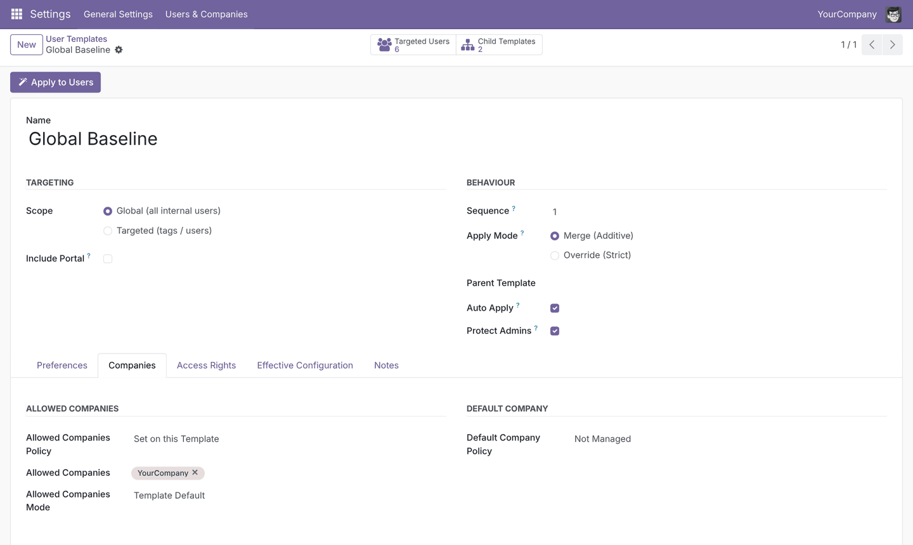
The Effective Configuration tab shows every setting after inheritance, with the mode used and the template the value comes from. Finance Managers (Global Baseline → Accountants → Finance Managers) inherits its time zone from the grandparent and its groups from Accountants.
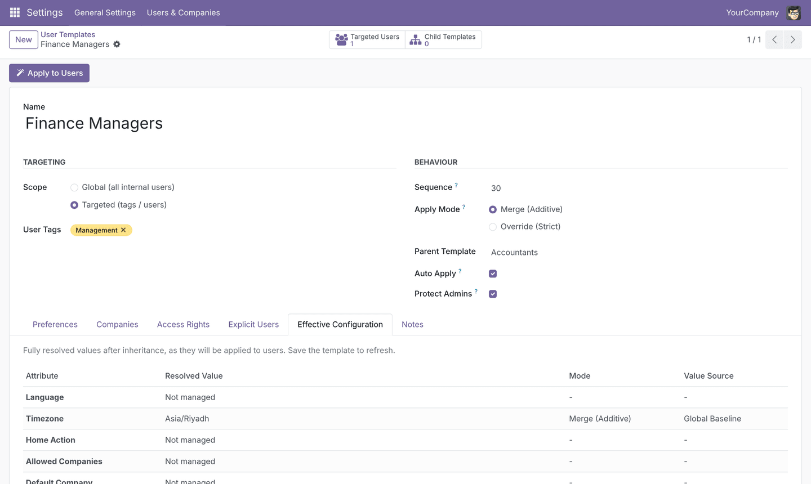
Tags group users by team, role or status, with colours, user counts and the templates linked to each tag. Members can be managed from the tag itself: adding or removing a member re-applies the auto-apply templates for that user immediately.
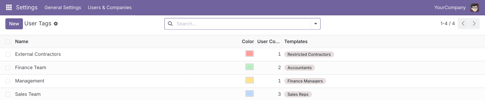
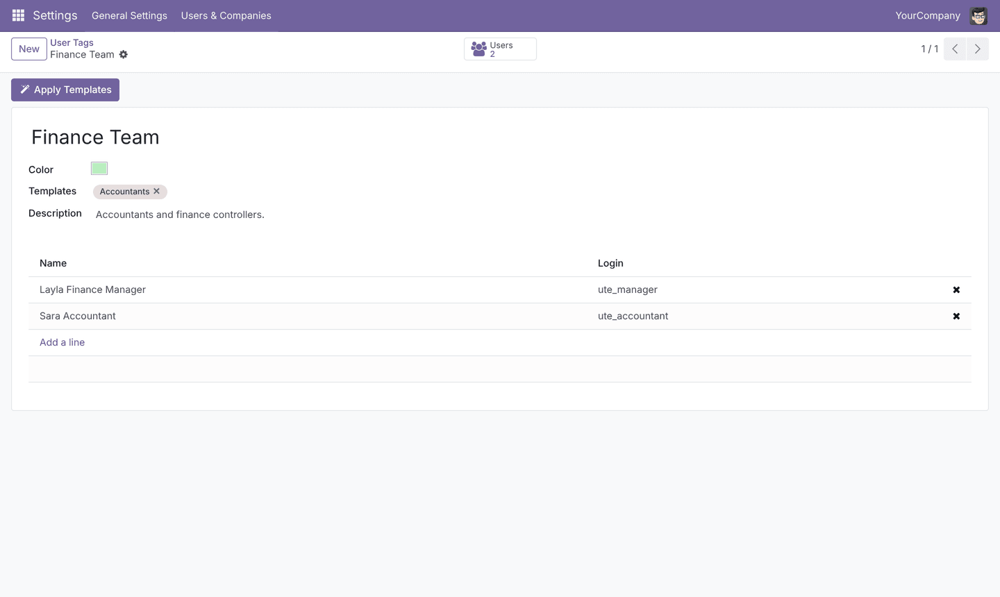
The standard users list shows each user's tags; you can search and group users by tag.
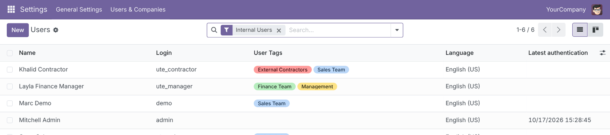
Each user gets a Templates & Tags tab: their tags, the templates that apply to them in precedence order, an Apply Templates Now button and the history of every change made by the engine.
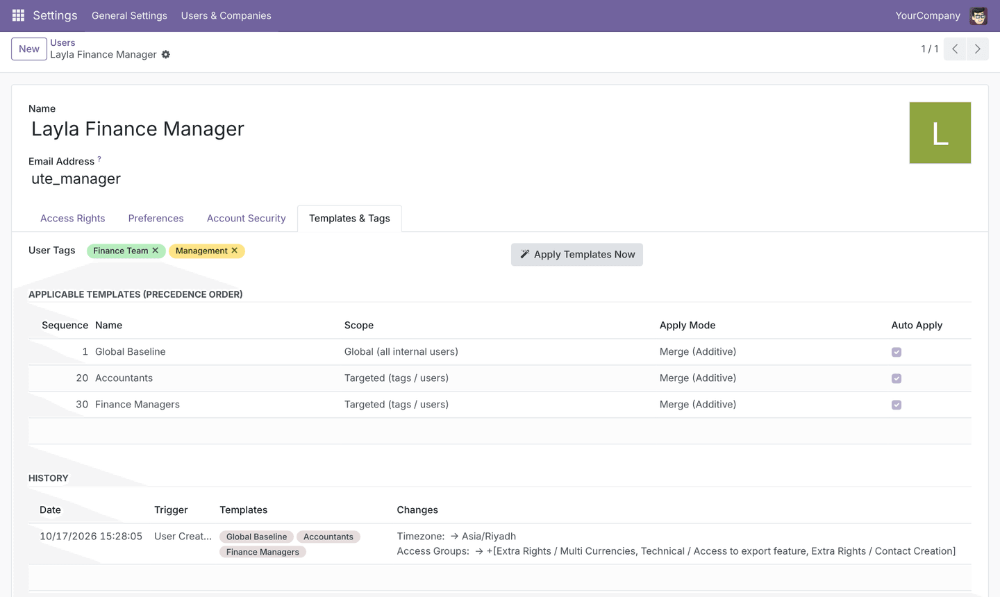
The bulk wizard targets selected users, users with given tags, the audience of chosen templates, or all active users. Choose to resolve all applicable templates (recommended) or apply only selected templates. Before anything is written, the preview lists every user and setting that will change, with before and after values. Users who already match are skipped.
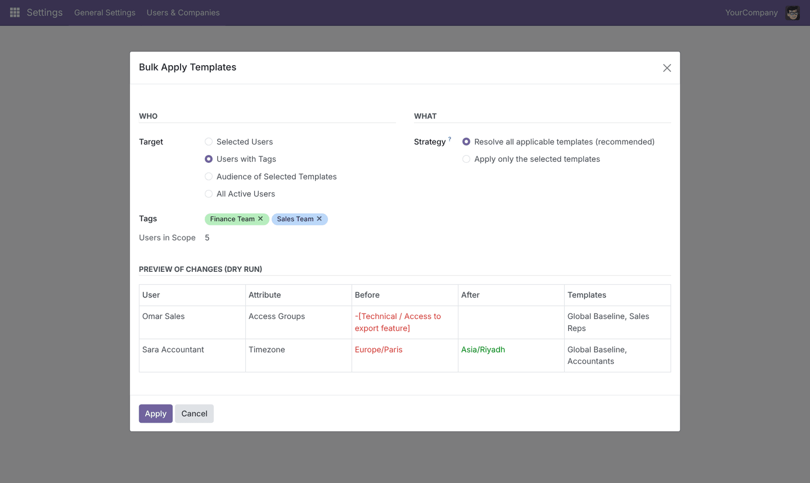
Select any users and choose Actions → Apply User Templates to open the wizard pre-filled with your selection. The same action exists on the tags list, the tag form and the template form.
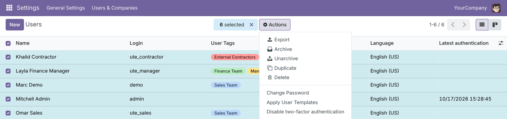
Every application is logged: date, user, trigger (User Creation, Tag Change, Bulk Wizard, Manual, Scheduled Sync), the templates involved, who applied it and the exact changes. Re-applying templates that are already in place produces no change and no new entry.
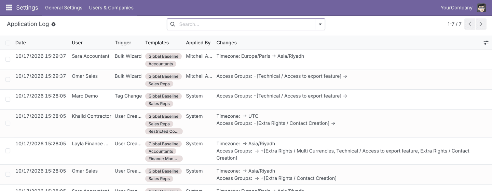
| Setting type | Merge (Additive) | Override (Strict) |
|---|---|---|
| Single value language, time zone, home action, default company |
Filled only when the user has no value | Always written; the later template wins |
| List access groups, allowed companies |
Added to what the user already has | Replaces the list (the user type is always kept) |
| Revoked groups | Always removed, after the template's own grants | |
Each template has an Auto Apply switch.
Tags: Finance Team, Sales Team, Management, External Contractors.
Templates: Global Baseline, Accountants, Sales Reps, Finance Managers, Restricted Contractors, and one archived legacy template.
Users (login = password):
ute_accountant, ute_sales, ute_manager, ute_contractor.
Go to Settings → Users & Companies → User Templates.
base_user_template_enginebase, web onlyres.users.template, res.users.tag,
res.users.template.log, bulk wizard
Developed by Ibrahim Yahia, Odoo functional consultant.
For questions, customisations or support, get in touch on LinkedIn: